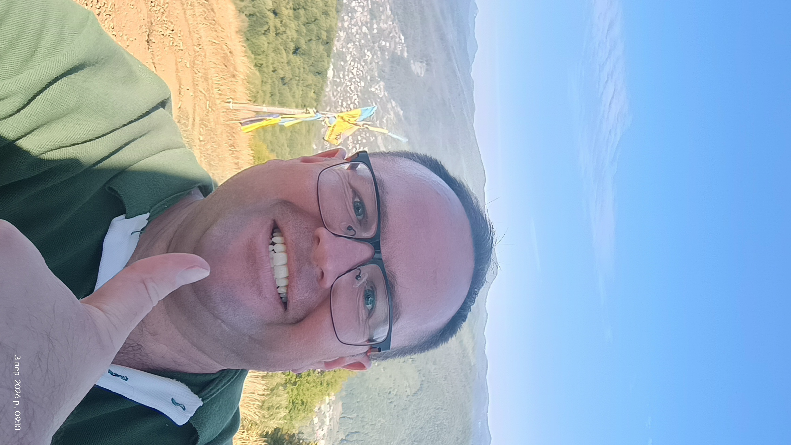

Людина. Історик. Поет. Громадянин.
Вітаю на моєму персональному сайті! Тут зібрані думки, творчість, життєвий досвід та погляди на світ.
Історик за освітою. Дослідник за покликанням. Громадянин, якому небайдужа доля України. Автор поетичних творів.